<title>Jacob Jenkins Portfolio</title>
<meta name="claude:viewport-fit-sides" content="cover">
<link rel="preconnect" href="https://fonts.googleapis.com">
<link rel="preconnect" href="https://fonts.gstatic.com" crossorigin>
<link rel="stylesheet" href="https://fonts.googleapis.com/css2?family=Archivo:wdth,wght@62..125,500..900&family=IBM+Plex+Sans:wght@400;500;600&family=IBM+Plex+Mono:wght@400;500&display=swap">
<style>
/* Layout concept: a set of drawing sheets. An index sheet up front, then one sheet per project,
   each with a title block (course, team, tools) beside the write-up. Georgia Tech navy and gold, kept quiet. */
:root{
  --bg:#F1F4F6; --surface:#FFFFFF; --ink:#0D1A25; --muted:#52626F; --rule:#C8D1D8;
  --accent:#003057; --gold:#9A8738; --tint:#E6ECF1; --focus:#0B6BCB;
  --display:"Archivo","Arial Narrow",Arial,sans-serif;
  --body:"IBM Plex Sans",system-ui,-apple-system,"Segoe UI",sans-serif;
  --mono:"IBM Plex Mono",ui-monospace,Menlo,Consolas,monospace;
}
@media (prefers-color-scheme: dark){
  :root:not([data-theme="light"]){
    --bg:#0A141C; --surface:#101D28; --ink:#E7EDF1; --muted:#9BAAB6; --rule:#263949;
    --accent:#9CC3E8; --gold:#C8B76C; --tint:#16273A; --focus:#7DB7F2; color-scheme:dark;
  }
}
:root[data-theme="dark"]{
  --bg:#0A141C; --surface:#101D28; --ink:#E7EDF1; --muted:#9BAAB6; --rule:#263949;
  --accent:#9CC3E8; --gold:#C8B76C; --tint:#16273A; --focus:#7DB7F2; color-scheme:dark;
}
*{box-sizing:border-box}
html{scroll-behavior:smooth;scroll-padding-top:64px}
body{
  margin:0; background:var(--bg); color:var(--ink);
  font:400 16px/1.6 var(--body);
  padding-left:max(16px,env(safe-area-inset-left,0px));
  padding-right:max(16px,env(safe-area-inset-right,0px));
  -webkit-text-size-adjust:100%;
}
img,video{max-width:100%;display:block}
a{color:var(--accent);text-underline-offset:3px}
:focus-visible{outline:2px solid var(--focus);outline-offset:3px;border-radius:2px}
.wrap{max-width:1160px;margin:0 auto}
h1,h2,h3{font-family:var(--display);font-stretch:78%;margin:0;line-height:1.02;text-wrap:balance}
p{margin:0 0 1em;max-width:64ch}
.mono{font-family:var(--mono);font-size:12px;letter-spacing:.06em;text-transform:uppercase;color:var(--muted)}

/* nav */
.nav{position:sticky;top:env(safe-area-inset-top,0px);z-index:20;background:var(--bg);border-bottom:1px solid var(--rule)}
body::before{content:"";position:fixed;inset:0 0 auto;height:env(safe-area-inset-top,0px);background:var(--bg);z-index:30}
.nav .wrap{display:flex;align-items:center;justify-content:space-between;gap:16px;min-height:52px;flex-wrap:wrap}
.nav b{font-family:var(--display);font-stretch:78%;font-weight:800;font-size:18px;letter-spacing:.01em}
.nav ul{display:flex;gap:4px 20px;list-style:none;margin:0;padding:0;flex-wrap:wrap}
.nav a{font:500 13px var(--body);color:var(--muted);text-decoration:none;padding:6px 0;display:inline-block}
.nav a:hover{color:var(--ink)}

/* hero */
.hero{display:grid;grid-template-columns:minmax(0,1.25fr) minmax(0,.75fr);gap:48px;padding-block:56px 48px;align-items:end}
.hero h1{font-size:clamp(52px,9.5vw,118px);font-weight:900;letter-spacing:-.01em}
.hero h1 span{display:block;color:var(--accent)}
.lede{font-size:clamp(18px,2.1vw,22px);line-height:1.45;margin:28px 0 24px;max-width:34ch}
.meta{display:flex;flex-wrap:wrap;gap:8px 28px}
.hero figure{margin:0;position:relative}
.hero figure img{aspect-ratio:4/5;object-fit:cover;width:100%;border:1px solid var(--rule)}
.hero figcaption{margin-top:8px}

/* index sheet */
.index{border-top:3px solid var(--ink);padding-block:20px 56px}
.index h2{font-size:15px;font-weight:800;letter-spacing:.12em;text-transform:uppercase;font-stretch:100%;margin-bottom:12px}
.tbl{overflow-x:auto}
table{border-collapse:collapse;width:100%;min-width:620px}
th{font:500 12px var(--mono);letter-spacing:.06em;text-transform:uppercase;color:var(--muted);text-align:left;padding:8px 12px 8px 0;border-bottom:1px solid var(--ink)}
td{padding:14px 12px 14px 0;border-bottom:1px solid var(--rule);vertical-align:top;font-size:15px}
td:first-child{font-family:var(--mono);font-size:13px;color:var(--muted);width:64px}
td a{font:700 19px/1.2 var(--display);font-stretch:80%;text-decoration:none;color:var(--ink)}
td a:hover{color:var(--accent);text-decoration:underline}
td.num,th.num{font-variant-numeric:tabular-nums}

/* sheets */
.sheet{border-top:3px solid var(--ink);padding-block:28px 72px}
.sheet-head{display:grid;grid-template-columns:minmax(0,1fr) auto;gap:8px 24px;align-items:end;margin-bottom:32px}
.sheet-head h2{font-size:clamp(36px,6vw,72px);font-weight:900}
.sheet-head .sub{grid-column:1/-1;font-size:18px;color:var(--muted);max-width:60ch;margin:0}
.sheet-no{font:500 13px var(--mono);letter-spacing:.08em;color:var(--gold);align-self:start;grid-column:1/-1}
.body{display:grid;grid-template-columns:minmax(0,1fr) 300px;gap:56px;align-items:start}
.body > div{min-width:0}
.block{border:1px solid var(--ink);background:var(--surface)}
.block h3{font:500 12px var(--mono);letter-spacing:.08em;text-transform:uppercase;padding:8px 12px;background:var(--ink);color:var(--bg)}
.block dl{margin:0}
.block .row{display:grid;grid-template-columns:92px minmax(0,1fr);gap:10px;padding:9px 12px;border-top:1px solid var(--rule);font-size:14px;line-height:1.45}
.block .row:first-of-type{border-top:0}
.block dt{font:500 11px var(--mono);letter-spacing:.06em;text-transform:uppercase;color:var(--muted);padding-top:2px}
.block dd{margin:0}
.aside{display:grid;gap:20px;position:sticky;top:76px}
.sec{margin-block:0 36px}
.sec h3{font-size:26px;font-weight:800;margin-bottom:10px}
.sec h3 small{font:500 12px var(--mono);letter-spacing:.08em;color:var(--muted);text-transform:uppercase;margin-left:10px;font-stretch:100%}
.facts{display:grid;grid-template-columns:repeat(auto-fit,minmax(150px,1fr));gap:0;border:1px solid var(--rule);background:var(--surface);margin-block:8px 28px}
.facts div{padding:16px;border-left:1px solid var(--rule)}
.facts div:first-child{border-left:0}
.facts b{display:block;font:800 40px/1 var(--display);font-stretch:78%;color:var(--accent);font-variant-numeric:tabular-nums}
.facts span{display:block;margin-top:6px;font-size:13px;color:var(--muted);line-height:1.35}
ul.plain{margin:0 0 1em;padding-left:1.1em;max-width:64ch}
ul.plain li{margin-block:.25em}

/* media */
.media{display:grid;gap:16px;margin-block:8px 28px}
.m2{grid-template-columns:repeat(2,minmax(0,1fr))}
.m3{grid-template-columns:repeat(3,minmax(0,1fr))}
.mrow{display:flex;gap:16px;flex-wrap:wrap;align-items:flex-start}
figure{margin:0;min-width:0}
figure img,figure video{width:100%;height:auto;background:var(--tint);border:1px solid var(--rule)}
figure img.zoom{cursor:zoom-in}
figcaption{font-size:13px;color:var(--muted);margin-top:6px;line-height:1.4}
figure.portrait video{max-height:560px;width:auto;max-width:100%}
.contain img{background:#fff}
.stl{display:grid;grid-template-columns:repeat(auto-fit,minmax(190px,1fr));gap:16px;margin-block:8px 28px}
.stl figure{background:var(--surface);border:1px solid var(--rule);padding:12px}
.stl img{border:0;background:transparent}
.stl .mono{display:block;margin-top:4px}
.timeline{list-style:none;margin:0 0 28px;padding:0;border-left:2px solid var(--rule);max-width:70ch}
.timeline li{padding:2px 0 18px 20px;position:relative}
.timeline li::before{content:"";position:absolute;left:-7px;top:8px;width:12px;height:12px;background:var(--bg);border:2px solid var(--gold);border-radius:50%}
.timeline b{font:500 12px var(--mono);letter-spacing:.08em;text-transform:uppercase;color:var(--muted);display:block}
.timeline strong{font-weight:600}
pre{margin:0 0 24px;padding:16px;background:var(--surface);border:1px solid var(--rule);overflow-x:auto;font:400 13px/1.55 var(--mono);color:var(--ink);tab-size:4}
pre .c{color:var(--muted)}
.small{font-size:13px;color:var(--muted)}
.btn{display:inline-flex;align-items:center;gap:8px;font:600 14px var(--body);padding:10px 16px;background:var(--accent);color:var(--surface);border:1px solid var(--accent);text-decoration:none;cursor:pointer;min-height:44px}
.btn:hover{filter:brightness(1.12)}
.btn.ghost{background:transparent;color:var(--accent)}
.btn.ghost:hover{background:var(--tint);filter:none}
.dl{display:flex;flex-wrap:wrap;gap:12px;align-items:center;margin-block:8px 6px}
details{margin-top:10px;font-size:13px;color:var(--muted)}
details summary{cursor:pointer}
details ul{margin:8px 0 0;padding-left:1.1em;font-family:var(--mono);font-size:12px}
.status{font-size:13px;color:var(--muted);min-height:1.4em;margin:0}
.cmp{display:grid;grid-template-columns:1fr 1fr;gap:0;border:1px solid var(--rule);background:var(--surface);margin-block:8px 28px;max-width:560px}
.cmp div{padding:16px}
.cmp div+div{border-left:1px solid var(--rule)}
.cmp b{display:block;font:800 34px/1 var(--display);font-stretch:78%;font-variant-numeric:tabular-nums}
.cmp .hi{color:var(--accent)}
.cmp span{display:block;margin-top:6px;font-size:13px;color:var(--muted);line-height:1.35}
.note{border-left:3px solid var(--gold);padding:4px 0 4px 14px;margin-block:0 24px;max-width:64ch;color:var(--muted);font-size:15px}
.dtbl{min-width:0;max-width:520px;margin-bottom:24px}
.dtbl td,.dtbl th{padding:8px 12px 8px 0;font-size:14px}
.dtbl td:first-child{width:auto;font-family:var(--body);font-size:14px;color:var(--ink)}

/* footer */
.foot{border-top:3px solid var(--ink);padding-block:32px 72px;display:grid;grid-template-columns:minmax(0,1fr) minmax(0,1fr);gap:48px}
.foot h2{font-size:34px;font-weight:900;margin-bottom:12px}
.foot dl{margin:0;display:grid;gap:10px}
.foot dt{font:500 11px var(--mono);letter-spacing:.08em;text-transform:uppercase;color:var(--muted)}
.foot dd{margin:2px 0 0;font-size:15px}
.mail{display:flex;gap:10px;flex-wrap:wrap;align-items:center;margin-top:8px}
.mail code{font:500 15px var(--mono);user-select:all;word-break:break-all}

dialog{border:0;padding:0;background:transparent;max-width:min(96vw,1400px);max-height:94vh}
dialog::backdrop{background:rgba(5,10,15,.82)}
dialog img{max-width:96vw;max-height:90vh;object-fit:contain;background:#fff}
dialog button{position:absolute;top:8px;right:8px;min-height:44px;min-width:44px;font:600 18px var(--body);cursor:pointer;border:0;background:var(--ink);color:var(--bg)}

@media (max-width:900px){
  .hero{grid-template-columns:1fr;gap:28px;padding-block:36px 32px}
  .hero figure{max-width:420px}
  .body{grid-template-columns:1fr;gap:28px}
  .aside{position:static;order:-1}
  .m3{grid-template-columns:repeat(2,minmax(0,1fr))}
  .foot{grid-template-columns:1fr;gap:32px}
}
@media (max-width:560px){
  .index table{min-width:0}
  .index thead{display:none}
  .index tbody tr{display:grid;grid-template-columns:48px minmax(0,1fr);border-bottom:1px solid var(--rule);padding-block:12px}
  .index td{border:0;padding:0 0 2px}
  .index td:nth-child(3),.index td:nth-child(4){grid-column:2;font-size:13px;color:var(--muted)}
  .m2,.m3{grid-template-columns:1fr}
  .cmp{grid-template-columns:1fr}
  .cmp div+div{border-left:0;border-top:1px solid var(--rule)}
  .facts div{border-left:0;border-top:1px solid var(--rule)}
  .facts div:first-child{border-top:0}
  .block .row{grid-template-columns:80px minmax(0,1fr)}
}
@media (prefers-reduced-motion:reduce){html{scroll-behavior:auto}}
</style>

<header class="nav">
  <div class="wrap">
    <b>Jacob Jenkins</b>
    <nav aria-label="Sections">
      <ul>
        <li><a href="#sloth">Climbing robot</a></li>
        <li><a href="#balance">Balancing robot</a></li>
        <li><a href="#numerics">Numerical methods</a></li>
        <li><a href="#heat">Heat transfer</a></li>
        <li><a href="#knife">Knife display</a></li>
        <li><a href="#contact">Contact</a></li>
      </ul>
    </nav>
  </div>
</header>

<main class="wrap">

<section class="hero" aria-label="Introduction">
  <div>
    <p class="mono" style="margin-bottom:16px">Mechanical engineering portfolio</p>
    <h1>Jacob <span>Jenkins</span></h1>
    <p class="lede">I build machines that walk, balance and sense, plus the firmware, simulation and CAD behind them.</p>
    <div class="meta mono">
      <span>Georgia Tech</span><span>B.S. Mechanical Engineering</span><span>GPA 3.79</span><span>Expected May 2027</span>
    </div>
  </div>
  <figure>
    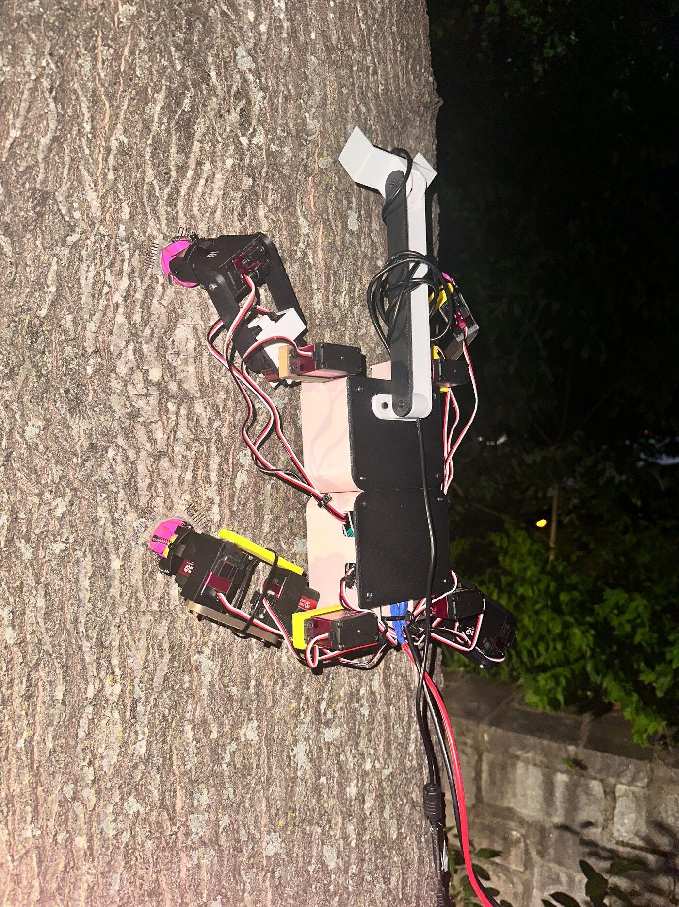
    <figcaption class="mono">S.L.O.T.H. on a trunk, spring 2026</figcaption>
  </figure>
</section>

<section class="index" aria-labelledby="idx">
  <h2 id="idx">Index of work</h2>
  <div class="tbl">
  <table>
    <thead><tr><th>No.</th><th>Project</th><th>Discipline</th><th>Built with</th></tr></thead>
    <tbody>
      <tr><td>P-01</td><td><a href="#sloth">S.L.O.T.H. tree-climbing robot</a></td><td>Robotics, machine learning, vision</td><td>STM32, C, MuJoCo, MobileNetV2, OnShape</td></tr>
      <tr><td>P-02</td><td><a href="#balance">Self-balancing, self-navigating robot</a></td><td>Embedded control</td><td>STM32CubeIDE, C, MPU-6050, HC-SR04</td></tr>
      <tr><td>P-03</td><td><a href="#numerics">Integration and differentiation toolkit</a></td><td>Numerical methods</td><td>MATLAB</td></tr>
      <tr><td>P-04</td><td><a href="#heat">2D nodal temperature solver</a></td><td>Heat transfer</td><td>MATLAB</td></tr>
      <tr><td>P-05</td><td><a href="#knife">Antler knife display</a></td><td>CAD, design drawings</td><td>SolidWorks, 3D printing</td></tr>
    </tbody>
  </table>
  </div>
</section>

<!-- ============ P-01 ============ -->
<section class="sheet" id="sloth" aria-labelledby="h-sloth">
  <div class="sheet-head">
    <span class="sheet-no">P-01 · ME 4405 · Spring 2026</span>
    <h2 id="h-sloth">S.L.O.T.H.</h2>
    <p class="sub">Semi-autonomous Light Observational Tree Hugger: a four-legged robot that grips a trunk, learns how to walk in simulation and looks for tree disease with a camera.</p>
  </div>
  <div class="body">
    <div>
      <p>Checking tree health by hand means climbing every tree, and drones cannot fly through dense forest. Our goal, inspired by the LORIS free-climbing robot, was to climb 2 m of trunk, cross 1 m onto the lowest limb and come back, while a camera looks for disease on the bark.</p>

      <div class="facts" aria-label="Key figures">
        <div><b>12</b><span>servo-driven joints across four legs</span></div>
        <div><b>600k</b><span>simulation iterations to learn the gait</span></div>
        <div><b>94%</b><span>test accuracy, two-class bark classifier</span></div>
        <div><b>90°</b><span>vertical trunk the grippers hold on to</span></div>
      </div>

      <div class="sec">
        <h3>Learning to walk <small>Locomotion</small></h3>
        <p>Smooth motion was the hard part, so we trained a gait in MuJoCo and compared it with a hard-coded one on the real robot. The model is 1:1 with the robot, including real hard stops and masses. Keeping three feet on the ground earned reward. The chassis touching the floor or drifting sideways was punished. After 600,000 iterations the policy's joint angles are converted to PWM and sent to the servos.</p>
        <div class="mrow">
          <figure class="portrait" style="flex:0 1 260px">
            <video controls muted playsinline preload="metadata" poster="vid/sloth-walking.jpg" width="406" height="720"><source src="vid/sloth-walking.mp4" type="video/mp4"></video>
            <figcaption>Walking test on pavement.</figcaption>
          </figure>
          <div style="flex:1 1 320px;display:grid;gap:16px;min-width:0">
            <figure>
              <video controls muted playsinline preload="metadata" poster="vid/sloth-legs.jpg" width="1100" height="710"><source src="vid/sloth-legs.mp4" type="video/mp4"></video>
              <figcaption>Leg propagation in the MuJoCo model.</figcaption>
            </figure>
            <figure>
              <video controls muted playsinline preload="metadata" poster="vid/sloth-manual.jpg" width="1100" height="706"><source src="vid/sloth-manual.mp4" type="video/mp4"></video>
              <figcaption>Manual control of the simulated robot.</figcaption>
            </figure>
          </div>
        </div>
      </div>

      <div class="sec">
        <h3>Looking for disease <small>Vision</small></h3>
        <p>A webcam on the tether streams frames to a laptop, where a MobileNet V2 classifier sorts them into the two disease types we had data for, stripe canker and rough bark. It reached 94% on the held-out test set.</p>
        <p>Camera sizing came from the defect size. A 6 in defect needs at least 10 pixels across. At the working distance the webcam sees about 26 by 15 in at 1080p, which is roughly 73 px/in, so a 6 in defect covers about 438 px.</p>
        <p class="note">Accuracy dropped on real photos taken outdoors because the training set was small. The next steps were more data and trying other detectors such as YOLO.</p>
      </div>

      <div class="sec">
        <h3>Knowing where it is <small>Positioning</small></h3>
        <p>An MPU-6050 6-axis IMU tracks height relative to the starting point, so each detection can be logged with where on the trunk it was seen. The sensor was specified at a 50 Hz sample rate.</p>
      </div>

      <div class="sec">
        <h3>Staying on the bark <small>Grippers</small></h3>
        <p>Each foot is a TPU 80A pad with fish hooks that catch bark texture, with a spring for compliance. I tested and tuned the claws until the robot could hang unsupported from a vertical trunk.</p>
        <div class="media m3">
          <figure>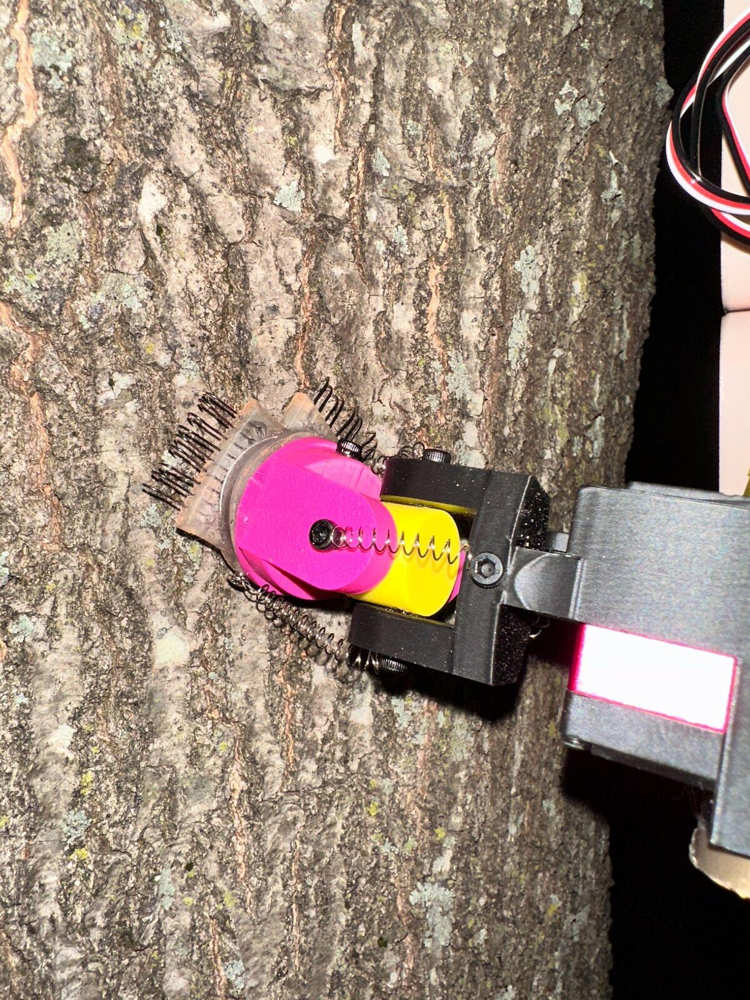<figcaption>Spring-loaded gripper on bark.</figcaption></figure>
          <figure>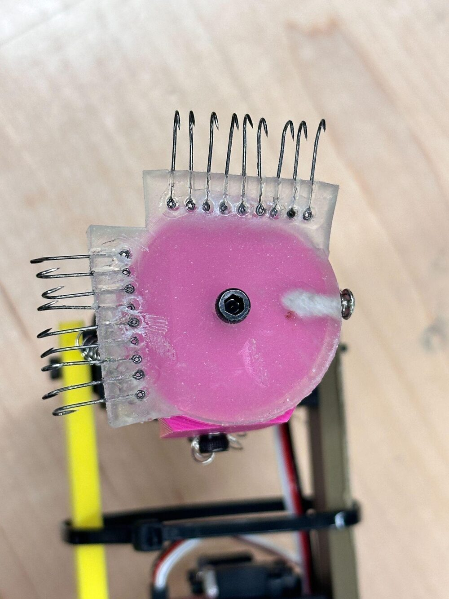<figcaption>TPU 80A pad with fish hooks.</figcaption></figure>
          <figure>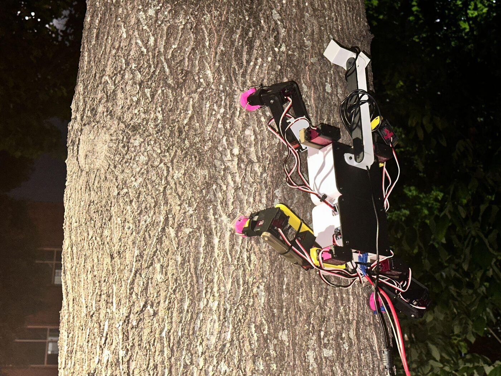<figcaption>Robot holding the trunk.</figcaption></figure>
        </div>
      </div>

      <div class="sec">
        <h3>Wiring it together <small>Electronics and CAD</small></h3>
        <p>The laptop runs vision and motion planning and is tethered to the robot. On the robot, an STM32 Nucleo drives twelve servo channels with PWM, reads the IMU over I2C and takes camera and controller signals. Servos run from a 12 V supply through a 6 V regulator. A PS3 controller provides teleoperation.</p>
        <div class="media m2">
          <figure class="contain">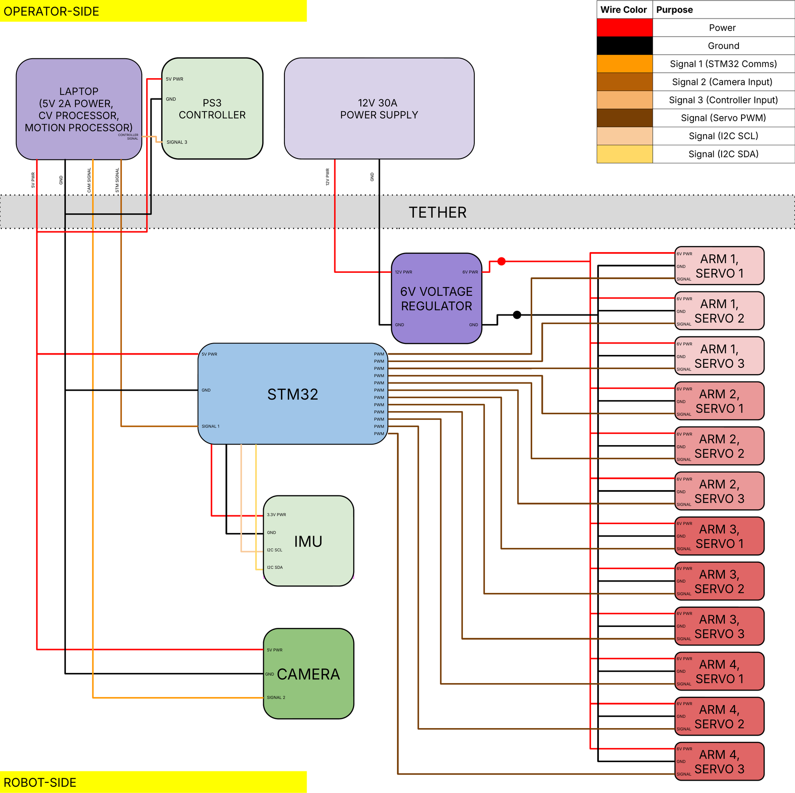<figcaption>Electrical schematic.</figcaption></figure>
          <figure>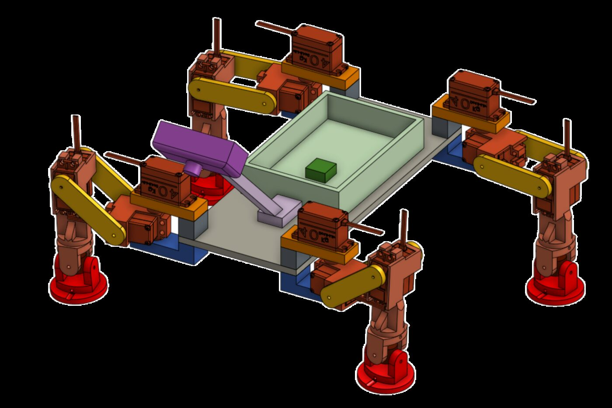<figcaption>CAD model used for the simulation.</figcaption></figure>
        </div>
      </div>

      <div class="sec">
        <h3>What I would change <small>Next steps</small></h3>
        <ul class="plain">
          <li>Add thumb actuation and rework the ball-and-socket joint.</li>
          <li>Stiffen the ankles.</li>
          <li>Collect more training data and rework the vision pipeline.</li>
          <li>Close the sim-to-real gap and integrate the teleoperation controller.</li>
        </ul>
      </div>
    </div>

    <aside class="aside">
      <div class="block">
        <h3>Title block</h3>
        <dl>
          <div class="row"><dt>Course</dt><dd>ME 4405 Fundamentals of Mechatronics</dd></div>
          <div class="row"><dt>Team</dt><dd>Mohen Li, Rohan Gawande, Grendel Gardiner, Jacob Jenkins</dd></div>
          <div class="row"><dt>Hardware</dt><dd>STM32 Nucleo-L476RG, 12 DS3240 servos, MPU-6050, USB webcam</dd></div>
          <div class="row"><dt>Software</dt><dd>C, MuJoCo, MobileNet V2</dd></div>
          <div class="row"><dt>Design</dt><dd>OnShape CAD, 3D-printed parts</dd></div>
        </dl>
      </div>
      <div class="block">
        <h3>My part</h3>
        <dl>
          <div class="row" style="grid-template-columns:1fr"><dd>Wrote the state machine for operating modes and control logic.</dd></div>
          <div class="row" style="grid-template-columns:1fr"><dd>Selected three sensors from calculated performance requirements.</dd></div>
          <div class="row" style="grid-template-columns:1fr"><dd>Integrated sensors and actuators with the STM32 and programmed the servos in C.</dd></div>
          <div class="row" style="grid-template-columns:1fr"><dd>Tested and tuned the gripping claws.</dd></div>
          <div class="row" style="grid-template-columns:1fr"><dd>Redesigned and attached 12 joints over two iterations.</dd></div>
        </dl>
      </div>
    </aside>
  </div>
</section>

<!-- ============ P-02 ============ -->
<section class="sheet" id="balance" aria-labelledby="h-bal">
  <div class="sheet-head">
    <span class="sheet-no">P-02 · ME 4405 · Labs 4 to 8 · Spring 2026</span>
    <h2 id="h-bal">Balancing robot</h2>
    <p class="sub">A self-balancing two-wheeled chassis, re-brained with an STM32 Nucleo and programmed from bare timers up to a tilt controller.</p>
  </div>
  <div class="body">
    <div>
      <p>The course gave us an Elegoo self-balancing kit and asked us to replace its Arduino Nano with an STM32 Nucleo-L476RG. Each lab added a sensor or a control idea, and each one is written in C in STM32CubeIDE with the HAL drivers. Lab 8 takes off the training wheel and uses IMU tilt to hold the chassis upright.</p>

      <ol class="timeline">
        <li><b>Lab 4 · Robot eyes</b><strong>Ultrasonic ranging.</strong> A timer interrupt triggers an HC-SR04 and the echo time is converted to distance in centimeters.</li>
        <li><b>Lab 5 · The cliff path</b><strong>PWM and encoders.</strong> Motor speed through a TB6612FNG driver, encoder ticks, and an open-loop pre-programmed path.</li>
        <li><b>Lab 6 · Tunnel of darts</b><strong>PID distance keeping.</strong> Ultrasonic distance in, motor duty cycle out, tuned by trial, with an offset to clear the motors' dead zone. The robot holds a set distance from a wall and backs up as well as drives forward.</li>
        <li><b>Lab 7 · The labyrinth</b><strong>Servo scanning.</strong> The ultrasonic sensor sits on a servo, sweeps twelve angles, and the robot turns toward the largest clearance.</li>
        <li><b>Lab 8 · The spinning wheel</b><strong>I2C IMU and balancing.</strong> MPU-6050 over I2C, a Kalman-filtered tilt angle, and a feedback loop that keeps the robot upright.</li>
      </ol>

      <div class="sec">
        <h3>Navigating the maze <small>Ultrasonic</small></h3>
        <figure class="portrait" style="max-width:280px">
          <video controls muted playsinline preload="metadata" poster="vid/maze.jpg" width="406" height="720"><source src="vid/maze.mp4" type="video/mp4"></video>
          <figcaption>A full run through the maze.</figcaption>
        </figure>
      </div>
      </div>

      <div class="sec">
        <h3>Staying upright <small>IMU and control</small></h3>
        <p>The accelerometer is set to a ±4 g range and a Kalman filter fuses it with the gyro into a tilt angle. The loop reads tilt twice, 1 ms apart, takes the difference as angular rate, and commands both motors from a proportional and derivative term about a small tilt offset. The sign of the result sets motor direction and its size sets the PWM duty.</p>
<pre><span class="c">// Lab 8: balance loop (main.c)</span>
MPU6050_Read_All(&amp;hi2c1, &amp;MPU6050);
angle_x_past = MPU6050.KalmanAngleX;
HAL_Delay(1);
MPU6050_Read_All(&amp;hi2c1, &amp;MPU6050);
angle_x  = MPU6050.KalmanAngleX;
dangle_x = (angle_x - angle_x_past) * 1000;      <span class="c">// deg/s</span>
output   = k_p * (angle_x - 0.6) + k_d * dangle_x;   <span class="c">// k_p = 110, k_d = 0.001</span>
<span class="c">// output &gt;= 0: drive one way; output &lt; 0: flip direction pins, use |output|</span>
__HAL_TIM_SET_COMPARE(&amp;htim2, TIM_CHANNEL_1, output);
__HAL_TIM_SET_COMPARE(&amp;htim2, TIM_CHANNEL_2, output * gain);</pre>
        <p class="small">The MPU-6050 driver is a public GPL library by Bulanov Konstantin, whose Kalman filter comes from TKJ Electronics, imported as the lab directed. The control code around it is mine.</p>
      </div>
    </div>

    <aside class="aside">
      <div class="block">
        <h3>Title block</h3>
        <dl>
          <div class="row"><dt>Course</dt><dd>ME 4405 Fundamentals of Mechatronics</dd></div>
          <div class="row"><dt>Platform</dt><dd>Elegoo self-balancing kit with STM32 Nucleo-L476RG</dd></div>
          <div class="row"><dt>Sensors</dt><dd>HC-SR04 ultrasonic, MPU-6050 6-axis IMU, wheel encoders</dd></div>
          <div class="row"><dt>Actuators</dt><dd>DC gear motors via TB6612FNG, SG90 servo, 28BYJ-48 stepper</dd></div>
          <div class="row"><dt>Software</dt><dd>C, STM32CubeIDE, HAL, I2C, timers and interrupts</dd></div>
        </dl>
      </div>
    </aside>
  </div>
</section>

<!-- ============ P-03 ============ -->
<section class="sheet" id="numerics" aria-labelledby="h-num">
  <div class="sheet-head">
    <span class="sheet-no">P-03 · Module Project 4 · MATLAB · November 2024</span>
    <h2 id="h-num">Better integration and differentiation</h2>
    <p class="sub">Two functions that look at the spacing of a data set and pick the numerical rule that suits each stretch of it.</p>
  </div>
  <div class="body">
    <div>
      <p>Built-in tools such as <code>trapz</code> and <code>diff</code> treat every interval alike. Real measured data is often unevenly spaced, so these functions read the step size first and choose a rule for each run of points.</p>

      <div class="sec">
        <h3>betterIntegrator</h3>
        <p>Runs of equal spacing are integrated with Simpson's 1/3 rule. If a run has an odd number of intervals, one Simpson's 3/8 panel absorbs the odd interval. A lone interval of different width falls back to the trapezoid rule. The function also returns how many times it used each rule.</p>
        <p>On a clean test, the integral of x⁵ from 2 to 100, the true value is 1.66666666656 × 10¹¹.</p>
        <div class="cmp">
          <div><b>0.025%</b><span>error with <code>trapz</code></span></div>
          <div><b class="hi">0.000002%</b><span>error with Simpson's rule, as used by betterIntegrator on evenly spaced data</span></div>
        </div>
      </div>

      <div class="sec">
        <h3>betterDifferentiator</h3>
        <p>Where the step is the same on both sides of a point it uses a central difference. At uneven spacing and at both endpoints it uses a three-point polynomial derivative, which keeps the end values accurate instead of dropping a point. It returns a count of each method used.</p>
      </div>

      <div class="sec">
        <h3>Putting it to work <small>Engine and flywheel data</small></h3>
        <p>I ran both functions on measured torque and angle data from an engine experiment. The differentiator gives angular velocity against angle. The integrator turns torque over angle into the motor's work. Friction torque comes from the tail of the run, and an energy balance between motor work, friction work and kinetic energy gives the flywheel's moment of inertia.</p>
<pre><span class="c">% betterIntegrator.m (header)</span>
function [I,counts] = betterIntegrator(x,y)
<span class="c">% Integrates a data set using a combination of Simpson's and trapezoid rules.
%   x, y   = data vectors
%   I      = integral value
%   counts = [trapezoid; Simpson 1/3; Simpson 3/8] panels used</span></pre>
        <div class="dl">
          <a class="btn" href="files/jenkins-matlab-numerical-methods.zip" download>Download MATLAB code (.zip)</a>
        </div>
        <p class="status" role="status"></p>
        <details><summary>What is in the zip</summary>
          <ul><li>betterIntegrator.m</li><li>betterDifferentiator.m</li><li>better_integrator_test.m</li><li>better_differentiator_test.m</li><li>engineAnalysis_Jenkins.m</li><li>omega_plot.m, work_plot.m</li><li>experimentTorqueData.csv (the data the scripts load) and a README</li></ul>
        </details>
      </div>
    </div>
    <aside class="aside">
      <div class="block">
        <h3>Title block</h3>
        <dl>
          <div class="row"><dt>Language</dt><dd>MATLAB</dd></div>
          <div class="row"><dt>Inputs</dt><dd>Evenly or unevenly spaced x, y vectors</dd></div>
          <div class="row"><dt>Methods</dt><dd>Simpson 1/3 and 3/8, trapezoid, central difference, three-point polynomial</dd></div>
          <div class="row"><dt>Test</dt><dd>x⁵ on [2, 100], compared with the exact integral and derivative</dd></div>
          <div class="row"><dt>Files</dt><dd>7 .m files and 1 data file</dd></div>
        </dl>
      </div>
    </aside>
  </div>
</section>

<!-- ============ P-04 ============ -->
<section class="sheet" id="heat" aria-labelledby="h-heat">
  <div class="sheet-head">
    <span class="sheet-no">P-04 · Heat Transfer numerical project · MATLAB</span>
    <h2 id="h-heat">2D nodal temperature solver</h2>
    <p class="sub">Steady-state temperature inside a container of heat-generating electronics, solved for any grid size.</p>
  </div>
  <div class="body">
    <div>
      <p>The container is a 0.05 m by 0.2 m cross-section packed with electronics that generate 250,000 W/m³. It conducts better in y (14 W/m·K) than in x (7 W/m·K), is cooled by a 25 °C fluid, and loses heat by convection on all faces. Convection on the y face was varied from 10 to 100 W/m²·K.</p>

      <div class="sec">
        <h3>How the solver works</h3>
        <p><code>nodesolver(m, n, hy, kx, ky)</code> writes an energy balance at every node, with separate equations for corners, edges and interior nodes, then solves the resulting linear system. Symmetry lets it solve a quarter of the domain. Because it takes m and n as inputs, one function covers every grid, which made the grid study straightforward. I worked on it with Alex Bagnoni and David Harrington.</p>
      </div>

      <div class="sec">
        <h3>How fine does the grid need to be?</h3>
        <p>Maximum temperature was the benchmark. Going to 11 × 11 changed it by only 1.86%, so that grid was used for the rest of the study.</p>
        <div class="media m2" style="align-items:start">
          <div class="tbl">
            <table class="dtbl">
              <thead><tr><th>Grid</th><th class="num">Max temp (°C)</th><th class="num">Change</th></tr></thead>
              <tbody>
                <tr><td>4 × 4</td><td class="num">76.40</td><td class="num">7.91%</td></tr>
                <tr><td>6 × 6</td><td class="num">83.38</td><td class="num">9.14%</td></tr>
                <tr><td>9 × 9</td><td class="num">88.19</td><td class="num">5.77%</td></tr>
                <tr><td>11 × 11</td><td class="num">89.83</td><td class="num">1.86%</td></tr>
              </tbody>
            </table>
          </div>
          <figure class="contain">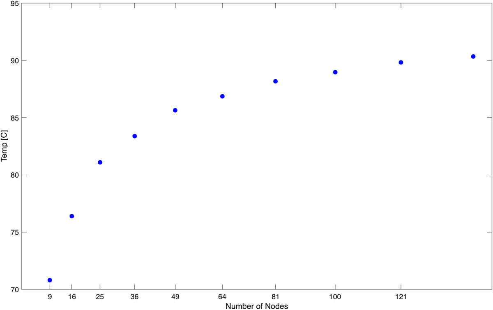<figcaption>Max temperature against node count levels off.</figcaption></figure>
        </div>
      </div>

      <div class="sec">
        <h3>What cooling and conductivity do</h3>
        <p>Raising convection on the y face lowers the temperature at every node. Along the x centerline, node temperatures fall from 80.2 to 88.8 °C at h = 10 to 73.0 to 81.5 °C at h = 100, and the curves stay nearly parallel. Along the y centerline the spread opens up from about 2 °C at h = 10 to about 12 °C at h = 100, because nodes near the cooled face feel the convection most.</p>
        <div class="media m2">
          <figure class="contain">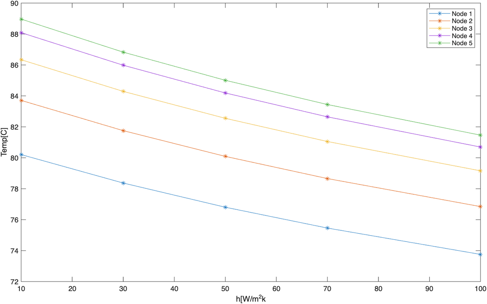<figcaption>x-centerline temperature against h.</figcaption></figure>
          <figure class="contain">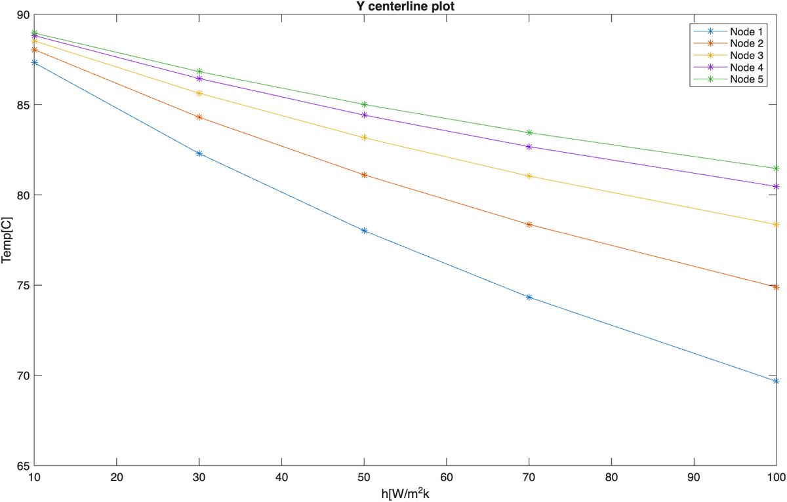<figcaption>y-centerline temperature against h.</figcaption></figure>
        </div>
        <div class="media m3">
          <figure>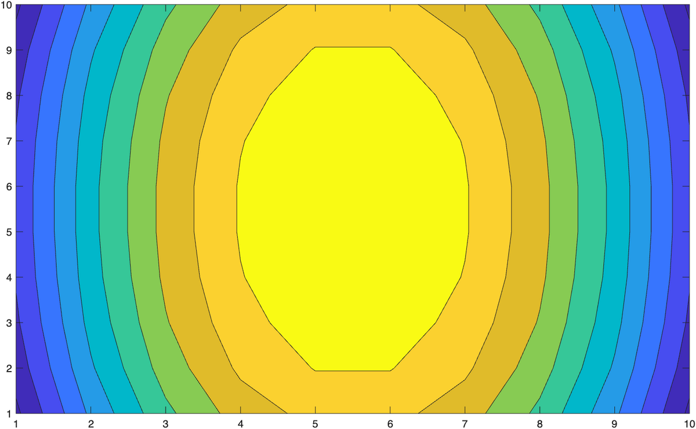<figcaption>h<sub>y</sub> = 10, k<sub>x</sub> = 7, k<sub>y</sub> = 14</figcaption></figure>
          <figure>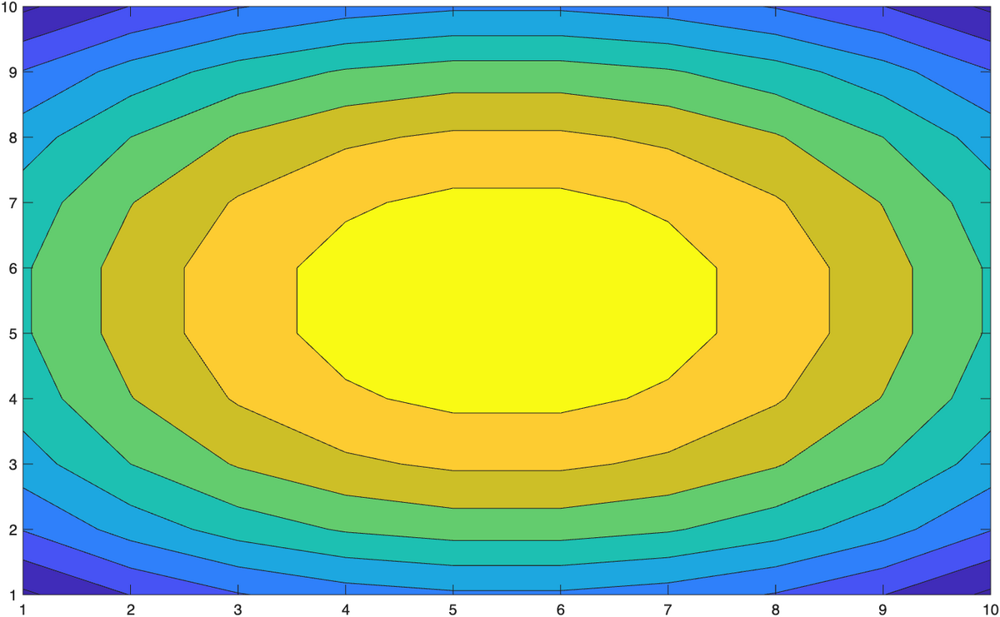<figcaption>h<sub>y</sub> = 100, k<sub>x</sub> = 7, k<sub>y</sub> = 14</figcaption></figure>
          <figure>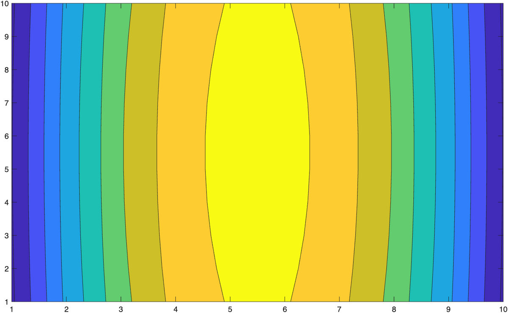<figcaption>h<sub>y</sub> = 100, k<sub>x</sub> = 1, k<sub>y</sub> = 250</figcaption></figure>
        </div>
        <p>Higher convection moves heat out through the faces faster. Raising conductivity in y while lowering it in x makes the temperature change abruptly in y and gradually in x, which is the pattern in the right-hand contour.</p>
        <div class="dl">
          <a class="btn" href="files/jenkins-matlab-heat-transfer-2d.zip" download>Download MATLAB code and report (.zip)</a>
        </div>
        <p class="status" role="status"></p>
        <details><summary>What is in the zip</summary>
          <ul><li>nodesolver.m</li><li>Heat_Transfer_Numerical_Project.pdf</li><li>README.txt with the three contour cases</li></ul>
        </details>
      </div>
    </div>
    <aside class="aside">
      <div class="block">
        <h3>Title block</h3>
        <dl>
          <div class="row"><dt>Team</dt><dd>Alex Bagnoni, David Harrington, Jacob Jenkins</dd></div>
          <div class="row"><dt>Model</dt><dd>2D steady-state conduction with uniform heat generation</dd></div>
          <div class="row"><dt>Inputs</dt><dd>Grid m × n, h<sub>y</sub>, k<sub>x</sub>, k<sub>y</sub></dd></div>
          <div class="row"><dt>Fixed</dt><dd>q″′ = 250,000 W/m³, h<sub>x</sub> = 100 W/m²·K, T<sub>∞</sub> = 25 °C</dd></div>
          <div class="row"><dt>Language</dt><dd>MATLAB, symbolic equations</dd></div>
        </dl>
      </div>
    </aside>
  </div>
</section>

<!-- ============ P-05 ============ -->
<section class="sheet" id="knife" aria-labelledby="h-knife">
  <div class="sheet-head">
    <span class="sheet-no">P-05 · ME 1670 Creative Ideation Design Project</span>
    <h2 id="h-knife">Antler knife display</h2>
    <p class="sub">A decorative stand for my grandfather's hunting knife, taken from first sketch to toleranced drawings to a painted 3D print.</p>
  </div>
  <div class="body">
    <div>
      <p>Hunting is a big part of my family, and I wanted a piece that shows off the knife my grandfather gave me. We mostly hunt deer from bow stands in trees, so the display uses antlers and a tree trunk. The shape of an antler gave the starting idea, and four ideation heuristics pushed it forward: changing geometry, merging surfaces, compartmentalizing, and going from 2D to 3D.</p>

      <div class="media m3">
        <figure>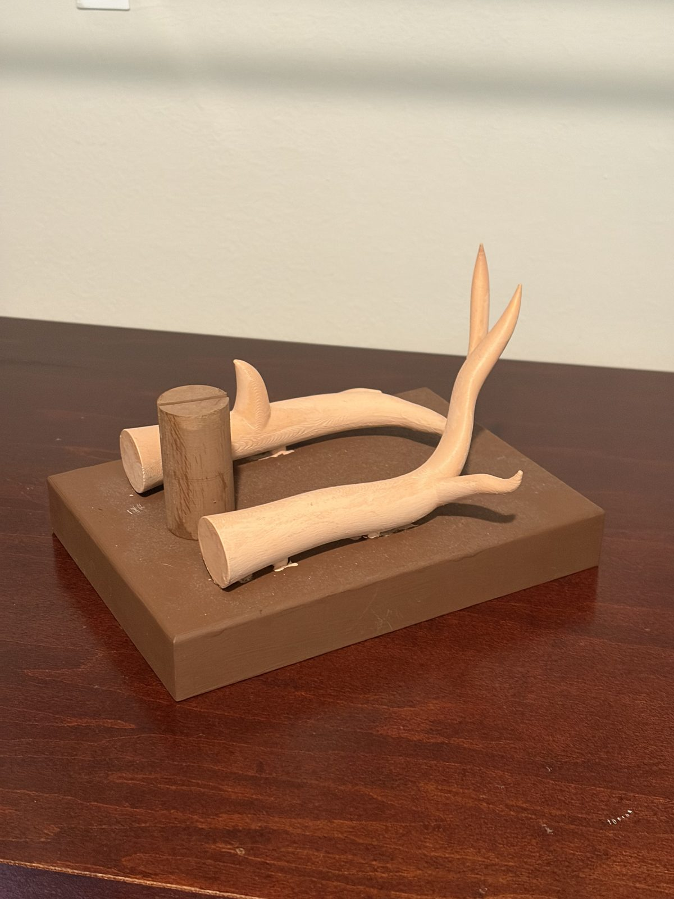<figcaption>The finished, painted display.</figcaption></figure>
        <figure>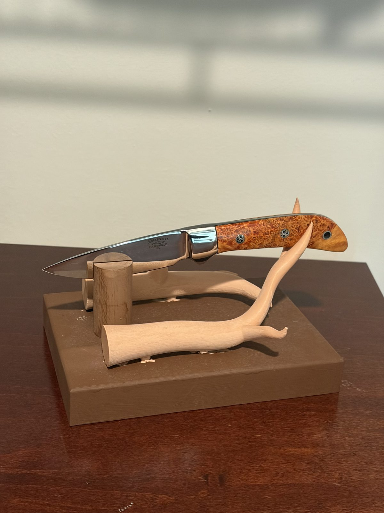<figcaption>Holding the knife.</figcaption></figure>
        <figure>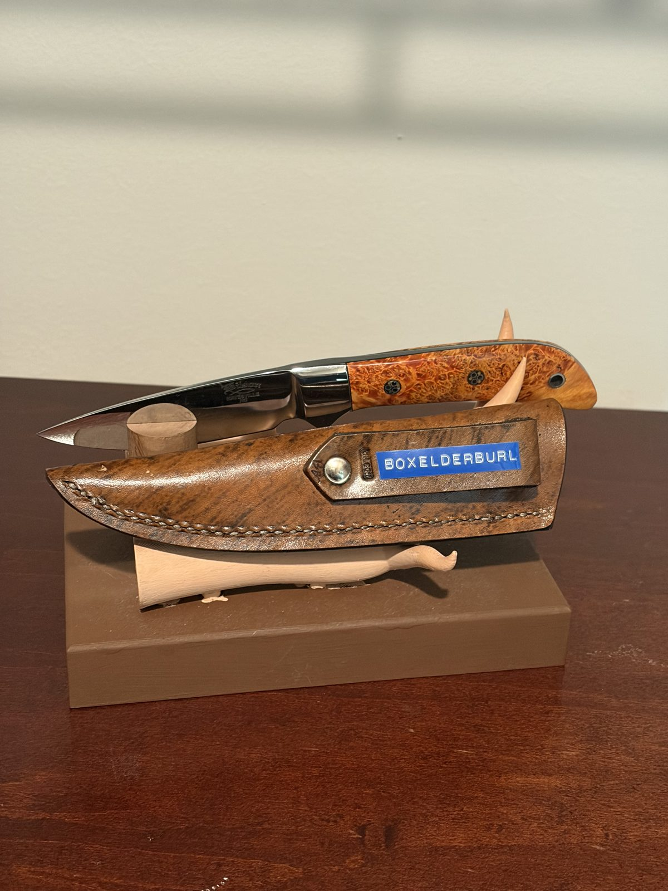<figcaption>With the knife and its sheath.</figcaption></figure>
      </div>

      <div class="sec">
        <h3>Sketch to part <small>Process</small></h3>
        <ol class="timeline">
          <li><b>Ideate</b><strong>Thumbnail sketches</strong> built from the antler-as-knife-holder connection and the heuristic cards.</li>
          <li><b>Draw</b><strong>Perspective, multiview and assembly sketches</strong> with dimensions: a 6 in base, 1 in diameter log, two antlers.</li>
          <li><b>Model</b><strong>SolidWorks parts and an assembly</strong> mated with concentric and coincident mates on interference-fit pegs.</li>
          <li><b>Document</b><strong>Working drawings, section views, an exploded view with parts list, and GD&amp;T tables</strong> at ±.01 in.</li>
          <li><b>Make</b><strong>3D print</strong> of the full assembly, then paint.</li>
        </ol>
        <div class="media m2">
          <figure>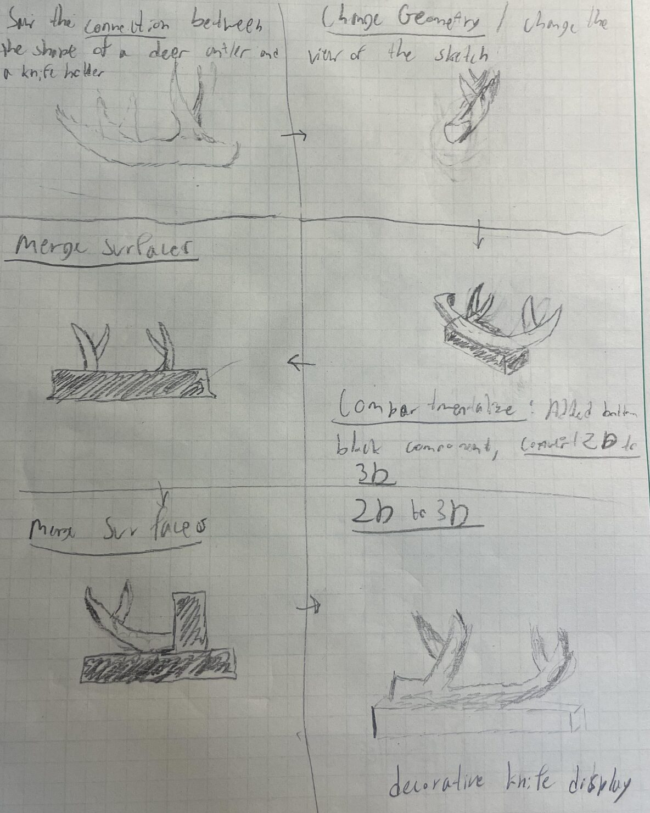<figcaption>Thumbnail sketches.</figcaption></figure>
          <figure>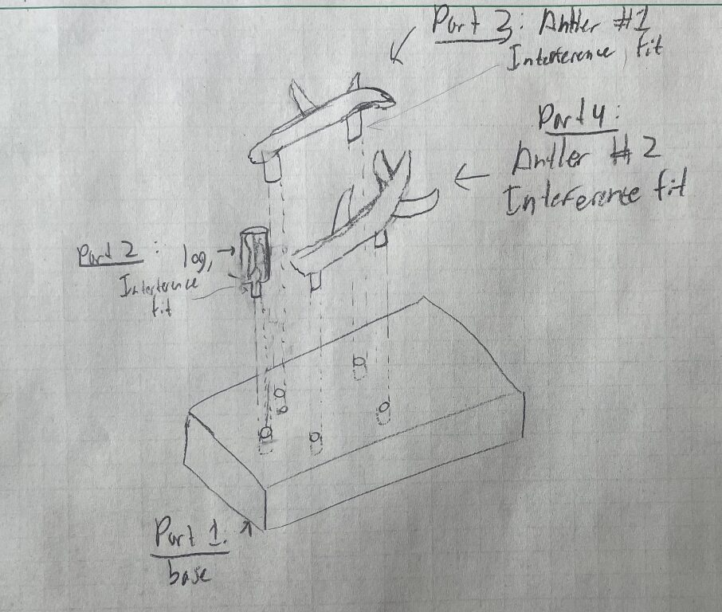<figcaption>Assembly sketch.</figcaption></figure>
          <figure>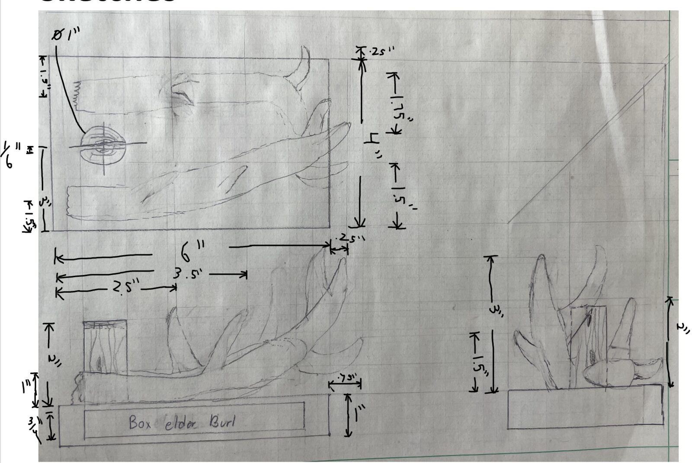<figcaption>Multiview with dimensions.</figcaption></figure>
          <figure class="contain">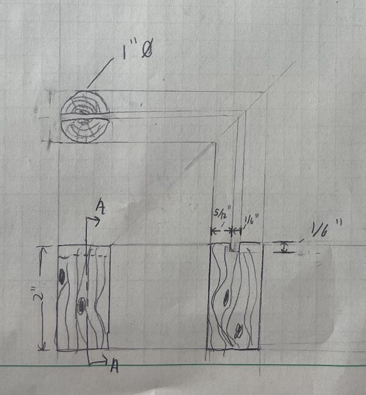<figcaption>Section view sketch of the log joint.</figcaption></figure>
        </div>
      </div>

      <div class="sec">
        <h3>CAD and drawings <small>SolidWorks</small></h3>
        <div class="media m3">
          <figure class="contain">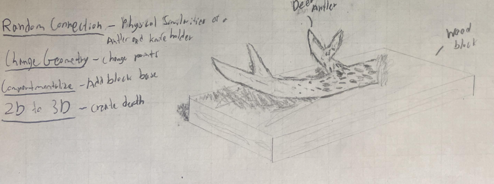<figcaption>SolidWorks assembly render.</figcaption></figure>
          <figure class="contain">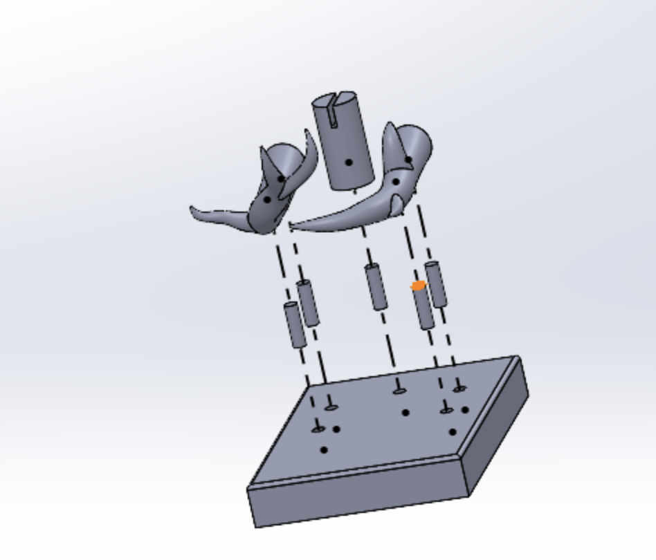<figcaption>Exploded view.</figcaption></figure>
          <figure class="contain">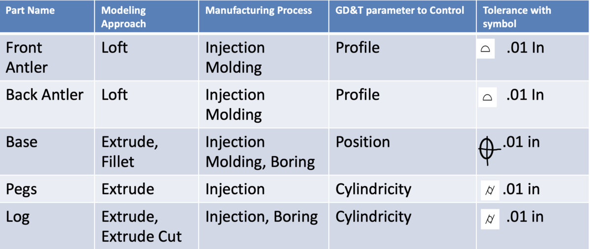<figcaption>Tolerance and GD&amp;T table.</figcaption></figure>
        </div>
      </div>

      <div class="sec">
        <h3>Printing <small>Before paint</small></h3>
        <div class="media m2">
          <figure>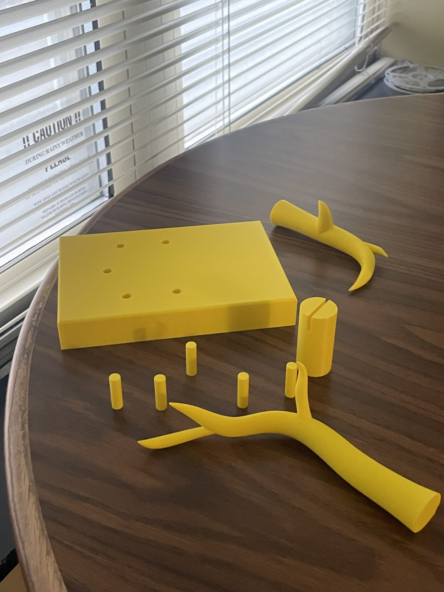<figcaption>Printed parts before assembly.</figcaption></figure>
        </div>
      </div>
    </div>
    <aside class="aside">
      <div class="block">
        <h3>Title block</h3>
        <dl>
          <div class="row"><dt>Course</dt><dd>ME 1670 Creative Ideation, Georgia Tech. Instructor Dr. Raghu Pucha</dd></div>
          <div class="row"><dt>Parts</dt><dd>Base, log, front antler, back antler, pegs</dd></div>
          <div class="row"><dt>Fits</dt><dd>Interference fits between pegs and parts</dd></div>
          <div class="row"><dt>Process</dt><dd>Designed for injection molding, prototyped by 3D printing and painted</dd></div>
          <div class="row"><dt>Tools</dt><dd>SolidWorks, hand sketching</dd></div>
        </dl>
      </div>
    </aside>
  </div>
</section>

<!-- ============ contact ============ -->
<section class="foot" id="contact" aria-labelledby="h-contact">
  <div>
    <h2 id="h-contact">Get in touch</h2>
    <p>Happy to talk through any of these projects.</p>
    <div class="mail">
      <code id="email">jjenkins307@gatech.edu</code>
      <button class="btn ghost" id="copy" type="button">Copy address</button>
    </div>
    <p class="status" id="copy-status" role="status"></p>
  </div>
  <dl>
    <div><dt>Education</dt><dd>Georgia Institute of Technology, B.S. Mechanical Engineering, expected May 2027. GPA 3.79. Dean's List, Pi Tau Sigma honor society.</dd></div>
    <div><dt>Programming</dt><dd>MATLAB, Python, C and C++</dd></div>
    <div><dt>CAD and tools</dt><dd>SolidWorks, Onshape, Revit, AutoCAD, STM32CubeIDE, Arduino IDE, Bambu Studio</dd></div>
    <div><dt>Lab skills</dt><dd>Oscilloscope, multimeter, soldering, laser cutting, 3D printing, sensor and actuator integration</dd></div>
    <div><dt>Experience</dt><dd>Mechanical engineering intern at Croft and Associates (HVAC modeling and design in HAP, Trane Trace, Revit and AutoCAD)</dd></div>
  </dl>
</section>

</main>

<dialog id="lb" aria-label="Enlarged image"><button type="button" id="lb-close" aria-label="Close">×</button></dialog>

<script>
(function(){
  // Enlarge images
  var lb=document.getElementById('lb'), lbi=document.getElementById('lb-img');
  document.addEventListener('click',function(e){
    var t=e.target;
    if(t.classList&&t.classList.contains('zoom')&&lb.showModal){lbi.src=t.currentSrc||t.src;lbi.alt=t.alt;lb.showModal();}
    else if(t===lb||t.id==='lb-close'){lb.close();}
  });

  // Copy email
  var cb=document.getElementById('copy'), cs=document.getElementById('copy-status'), em=document.getElementById('email');
  cb.addEventListener('click',function(){
    var done=function(){cs.textContent='Copied.'};
    var fallback=function(){var r=document.createRange();r.selectNodeContents(em);var s=getSelection();s.removeAllRanges();s.addRange(r);cs.textContent='Address selected. Press copy.'};
    try{ navigator.clipboard.writeText(em.textContent).then(done,fallback); }catch(e){ fallback(); }
  });
})();
</script>
